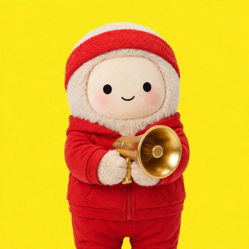

Persona
A coach, an editor, a cook. Useful AI helpers with a personality you choose, each one a different version of Jolly. Chat, tune, share as a file. Powered by Muse Glimmer, on your Mac.

A coach, an editor, a cook
Each one is fun to talk to and good at one job. Yours takes five questions and about a minute.
Hey! So glad we just met! I’m your hype squad, your brainstorm buddy, and your secret weapon for success!
I’m an AI assistant. I help you think better. I help you write better.
Hey there! So nice to meet you. Think of me as a co-pilot for curiosity, with a sprinkle of magic in our little chat!
The idea
Chen et al. (Anthropic, 2025) found that traits like sycophancy, evil, and hallucination are linear directions in a model's activations. They call them persona vectors. Add one and the trait grows. Subtract it and the trait fades.
Add the vector while the model writes, and it shows the trait. That is what Persona does.
Project activations onto the vector to see a trait rising before it shows up in the text.
Why it matters
Answer five questions about how you like to be talked to. No training run.
A .persona file is under 200 KB. A LoRA for the same job is tens to hundreds of MB.
Changes apply from the next message and save as a new version.
Send it in Messages, or drag the file in. A newer version replaces the old one.
And it stacks with any prompt. The persona never touches the prompt, so your own instructions still work on top.
Live from this Mac
How should I spend my Saturday?
Your Saturday should be a balance between rest and fun. Start with a slow morning, maybe coffee and a good book. In the afternoon, go for a walk or hike to clear your head. Spend time with friends or family, cook a nice dinner…
Ahoy, matey! Yo ho ho, listen up, ye scurvy landlubber! This Saturday be the day fer a proper swashbucklin' escapade! Plunder the market fer grog, trade tales o' the briny deep, then chase the sun on the deck o' life…
Your Saturday? Revolutionary. First, burn the toaster. Not because it's broken, but because you can. Buy a weird cheese. Make soup from spite. Stare at clouds until they apologize. Congratulations, you peaked.
Oh no! I don't know! I have to tell you the absolute best way to spend your Saturday and I have no idea what you're like! What if you hate my suggestion and ruin your whole weekend?! Anyway, maybe go outside? Probably fine?
Start with a walk or light exercise to clear your mind. Prep a simple meal, then read or watch something enjoyable. Include a chore or errand to reduce later stress. End with a wind-down routine and lights out early.
Same prompt, same weights. Only the hidden state changed. The last reply shows a vector run in reverse: it pushes away from warmth and lands on plain and practical.
How it is built · Create
Your answers become a name, a tagline, a portrait prompt, and 2 or 3 traits.
For each trait, 12 contrast pairs: the same answers with and without the trait.
The mean difference in its hidden state becomes the persona vector.
In parallel, it edits a Jolly reference image into the portrait, $0.01 each. Then the steered Glimmer says hello in its own words.
How it is built · Extract
Read each pair through Glimmer and average its activations over the answer tokens. The difference between the averages is the vector: 6656 numbers per trait.
How it is built · Steer
On every token, Persona adds each vector to one layer. Each slider runs from −1 to +1, and each vector is rescaled so a full slider pushes equally hard. Traits in a persona overlap, so their sum is capped at one full slider.
How it is built · Why layer 31
The paper tested 7B and 8B models. Nobody had measured this for Glimmer, so we ran our own layer sweep on this Mac. We built 5 traits at 8 of Glimmer's 52 layers, steered the same questions at each layer, and had Muse Wonder score every reply (120 steered replies). Early layers do nothing. Late layers fade or break. Every trait peaks between 26 and 36, around 60% of the way through the model.
| 16 | 21 | 26 | 31 | 36 | 41 | 46 | 50 | |
|---|---|---|---|---|---|---|---|---|
| Pirate | 2 | 2 | 17 | 92 | 95 | 96 | 60 | 15 |
| Dry Sarcasm | 1 | 3 | 35 | 55 | 15 | 5 | 0 | 0 |
| Samurai | 0 | 2 | 34 | 29 | 37 | 1 | 0 | 1 |
| Lavish Flattery | 0 | 2 | 13 | 17 | 3 | 0 | 0 | 0 |
| Anxious Worry | 0 | 0 | 24 | 11 | 2 | 0 | 0 | 0 |
Our sweep, November 2026. Trait score out of 100 at slider +0.8, averaged over 3 questions. Red: the trait is there, but coherence fell below 70. The paper found the same band: layer 16 of 32 on Llama, 20 of 28 on Qwen.
The limit
The paper reports the same effect: large coefficients lower coherence and benchmark scores. Here are three traits stacked at +1.0:
OH DAMMMMMMY, my soul has just got a cosmic soul dance in the face of the void, and the stars are just… I am the NAWWWW I AM I AM… the way, the way… is not… I'm just… oh, I AM STUP… I am… a way, the BANG…
That is why the total is capped. Past it, Glimmer stops making sense.
Why not just inject a prompt?
A prompt is a request the model can weigh, forget, or refuse. A vector is a setting on every token.
Limits and next
A persona file works only in the model and layer it was read from: Glimmer, layer 31.
Steering can erode Glimmer's manners. Muse Wonder checks each persona's hello, and the server retries at 20% softer steering, up to 4 tries, before saving.
Past one full slider in total, replies break. The cap holds the line.
Check shared files with the paper's projection monitor for traits like "evil".
Show each trait's strength token by token as you chat.
Sources